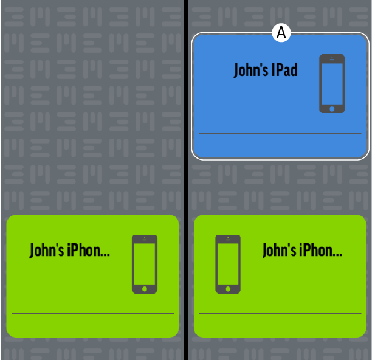

Múltiples dispositivos
Cuando conectes el cable MEEM a un nuevo dispositivo, el icono de nuevos dispositivos aparecerá en verde en la app. Si otros dispositivos han hecho una copia de seguridad en el cable MEEM, sus iconos se mostrarán en azul (A) a la derecha y sobre el icono de nuevos dispositivos (representando que son copias en MEEM). A partir de ahora, también el nuevo dispositivo hará una copia de seguridad en MEEM. En el cable se pueden hacer copias de hasta tres dispositivos.
